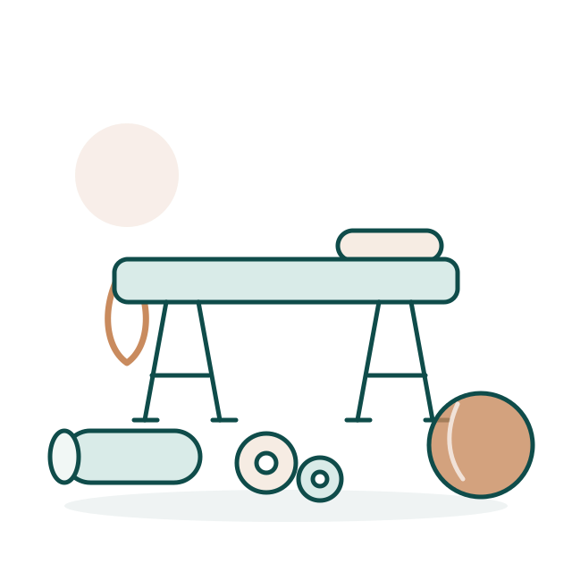
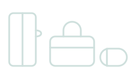

Fizjoterapia z dojazdem · Chojnice i okolice
Fizjoterapia u Ciebie w domu
Nazywam się Wojciech Burda i jestem fizjoterapeutą z wieloletnim doświadczeniem. Pracuję wyłącznie z dojazdem do pacjenta, więc terapia odbywa się w komfortowych warunkach, bez stresu i bez dojazdów.
- 100% wizyt domowych
- Chojnice 89‑600 i okolice
- Wycena indywidualna

O mnie
Doświadczenie, które przyjeżdża do pacjenta
Przez lata pracowałem jako fizjoterapeuta w klinice w Krojantach. Prowadziłem tam pacjentów po urazach i zabiegach operacyjnych oraz osoby zmagające się z przewlekłym bólem. To doświadczenie przywożę dziś do domu każdego pacjenta.
Dużą część mojej praktyki stanowi praca z osobami starszymi. Wiem, jak wiele znaczą wtedy spokojne tempo, cierpliwość i terapia dopasowana do realnych możliwości pacjenta, a nie do sztywnego schematu.
Nie prowadzę gabinetu. Sprzęt przywożę ze sobą, a termin i miejsce dopasowuję do Twojego planu dnia. Każdą terapię zaczynam od rozmowy i badania, żeby ustalić przyczynę dolegliwości, a nie tylko łagodzić objawy.
Oferta
W czym mogę pomóc
Zakres terapii dobieram po badaniu, podczas pierwszej wizyty.
-
Rehabilitacja sportowa
Powrót do aktywności po urazach i przeciążeniach. Praca nad siłą, stabilizacją i pełnym zakresem ruchu.
-
Terapia manualna
Techniki pracy na stawach i tkankach miękkich, które przywracają ruchomość i zmniejszają napięcie mięśni.
-
Fizjoterapia neurologiczna
Terapia pacjentów po udarach i z chorobami układu nerwowego. Nauka chodu, równowagi i codziennej samodzielności.
-
Leczenie bólu
Ból kręgosłupa, stawów i mięśni. Szukam źródła dolegliwości i pokazuję, co możesz robić między wizytami.
-
Praca z osobami starszymi
Poprawa sprawności, równowagi i pewności w poruszaniu się. Spokojne tempo dopasowane do możliwości pacjenta.
-
Rehabilitacja po urazach i operacjach
Prowadzenie pacjenta po skręceniach, złamaniach i zabiegach ortopedycznych, aż do powrotu do sprawności.
Wizyty domowe
Komfort Twojego domu, bez stresu i bez dojazdów. Cały potrzebny sprzęt przywożę ze sobą.
Umów wizytę
Kontakt
Umów wizytę
Zadzwoń lub napisz. Ustalimy termin i miejsce, a ja podam konkretną cenę wizyty.
Obszar dojazdu
Chojnice 89‑600 i okolice
Dojeżdżam do pacjenta. Nie prowadzę gabinetu stacjonarnego.
Cena wizyty
Wycena indywidualna
Koszt zależy od rodzaju terapii i odległości dojazdu. Podam go przez telefon.
Nie wiesz, czy fizjoterapia pomoże w Twoim przypadku? Zadzwoń, krótko porozmawiamy.
Zadzwoń: +48 698 656 720